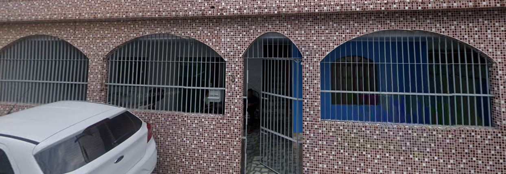
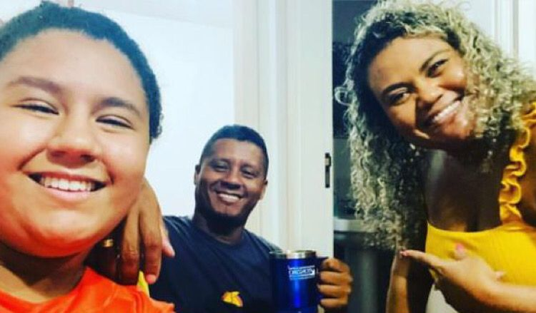
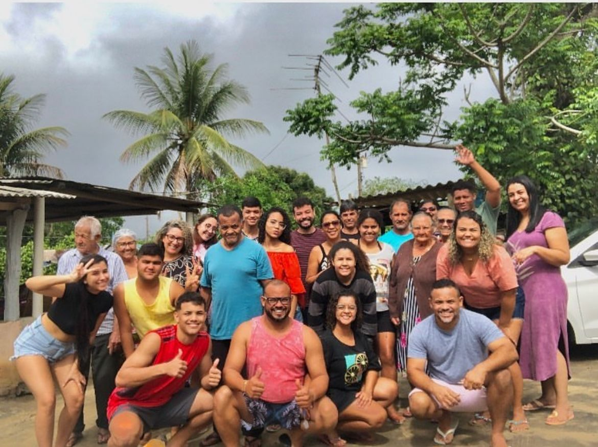
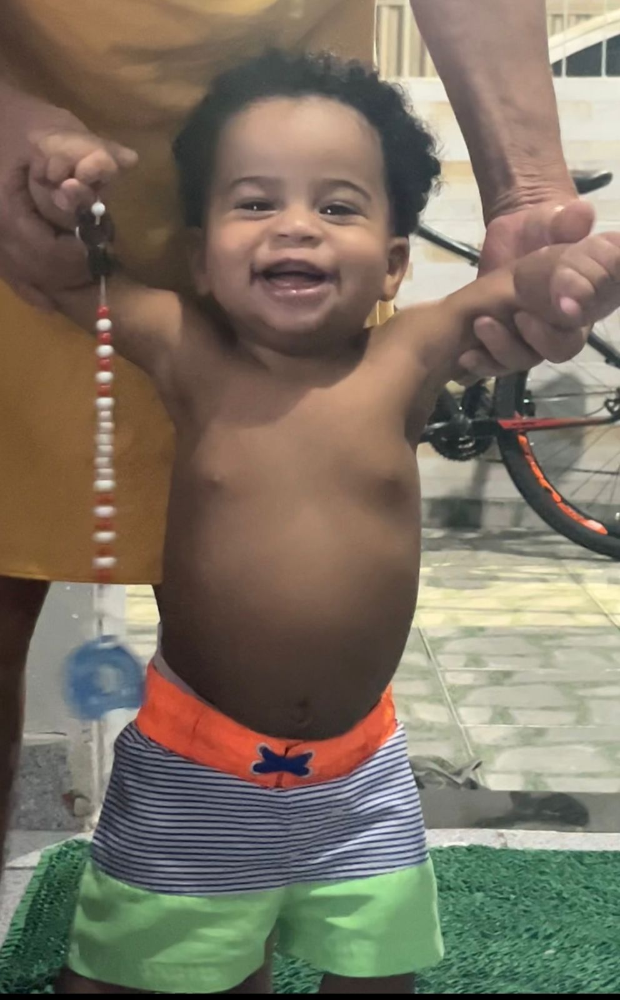
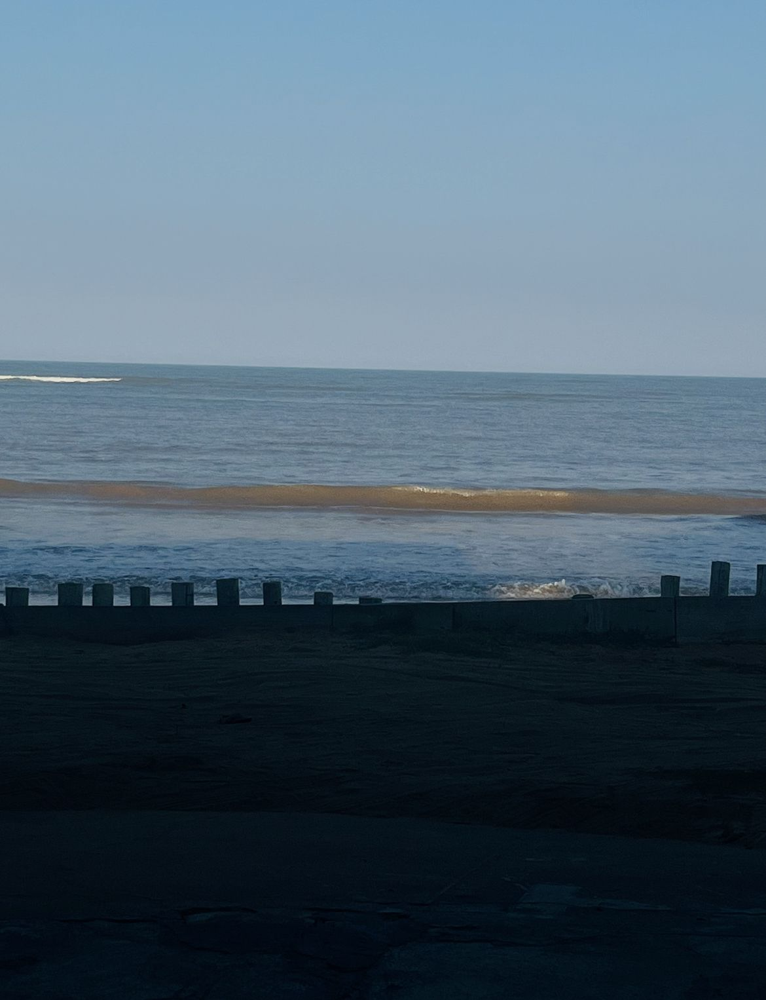

Sobre mim
nasci em vitoria-ES no ano de 2008.

moro em carapina grande

moro com meus pais

tenho uma familia muito grande e amo passar meus dias com eles

meu primo mais novo sempre resolver meus problemas

gosto de montar o cubo magico

gosto de desenhos

gosto de ver aviões

sou apaixonada em praia
